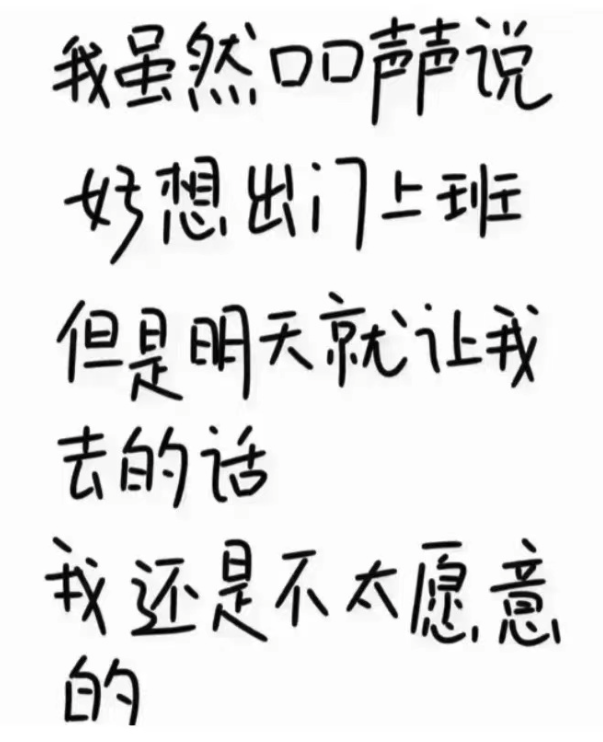

经历了这么长的时间的Work@Home,显然大家已经适应了这样的工作方式和节奏,突然宣布返岗上班,虽知道这一天早晚会到来,还是有点彷徨和措手不及.@Home3个月,回首往昔,偶有工作和生活的混淆纠缠,大部分时间还是能自我安排.毕竟原先上下班的通勤时间节省了,摸鱼的时间也可以自由安排了.虽日短时逝,如果这3个月安排妥当的话,还是能完成很多事情.当然,有一个必须的外置条件是家里的人,事和环境能支持你.幸好前两年换了房子,孩子也大了打扰也少了,所以这段时间内我还是完成了挺多事情的:
记录整个@Home的过程:
在家干的第一件事情是破解了一个视频网站.刚开始在家那段时间,白天工作晚上真的是无心再干别的事情,突如其来的封闭总让人措手不及,另外因为家里孩子学校的原因,孩子需要去隔离点隔离.加上生活上的一些事情,就是各种的心乱如麻.经常是强迫自己干点事情,但是总归在很短的时间内扰乱心绪,神游到千里之外去了,所有索性就躺着刷刷视频,但是有时候这个视频会卡.有时候还不能加载.总之也是各种的麻烦.然后我就开始想,是不是可以下载呢?反正短视频都很小.就开始找各种蛛丝马迹.功夫不负有心人,发现了一个能在无登录态的情况下批量获取视频id的渠道.试着访问了几下,一切正常.点开视频,开发者工具查看加载的信息,找到视频的播放地址,是一个M3U8的链接,但是文件名竟然就是上一步这个list中的id.看来程序员为了省事直接把这一层的对应关系写到了页面上.这不就是没有加权吗?也不会有什么限制了,直接下了一个M3U8的文件看了一下,对应的确实就是视频文件,而且M3U8也没有加密,写这个的程序员真是”良心”程序员.多试了几个,一切如常.顺便记下M3U8的地址,因为域名那一段后续需要用,另外记下了M3U8的地址的格式,一样后面要用.那么理论上,目前我已经能通过爬虫拿到整个的html,然后再通过解析html拿到视频的id,拿到id后,通过若干脚本(grep awk sed三剑客+sort和uniq)配合上M3U8的地址和其格式就可以把批量获取的的id组装成批量的M3U8地址.但M3U8直接下来的话就是一个文件,所以还得怎么想办法把M3U8的下载转成视频,找了51pojie的网站,找到一个M3U8的下载器,试用了一下,能达到效果并且好用,在使用的过程中也不crash,良心玩家.后续嘛....bingo.......果然技术的真正推动力是tmd好奇心,这该死的the fucking好奇心.....
刷了一段时间的视频,总觉得有点颓废,每次刷完后也是一顿空虚,不知道自己刚刚在干什么,怎么时间就过去了.告诫自己这样不行,还是要缓过神来.那就还是写写代码吧.期间一个忘年交也一直在和我联系,和他一起讨论他写的存储的事情,技术的事情.但是一时间也不知道该干点啥,虽然他挺想让我加入帮忙一起写存储的,但是我怕后续工作会耽误这个项目,所以就一直婉拒.那就先看看github上的东西吧,看看有什么能做的？
前面因为自己写分布式文件系统 需要一个时间框架，我选择了libev,在使用的过程中libev的user manual因为是e文的就觉得很不方便吧，所以我就抽空把libev的e文user manual翻译了中文user manual,但是没有翻译完整,这一晃就几年了。这次难得有时间，要不就校验一下顺便把没有翻译完整的给翻译完整了.重新开始翻译的时候看了一眼代码,惊奇的发现了libev中竟然内嵌了libecb的代码,libecb是一个builtin库,他只有一个head文件，所以放在那个项目里面都很方便并且不需要configurtion来配合。很早之前,偶然在睡前看到了这个项目,想着第二天详细看,结果第二天醒来名字忘记了.这几年也一直在找,一直在回想那个项目叫啥名字,就是想不起来,按理说,我的记忆力一直是很好的,但是这一波吃瘪了…这回真是踏破铁鞋无觅处得来全不费工夫.赶快把libecb的代码找出来,然后看见libecb也有一个e文文档,既然libev的都翻译了,那libecb也就把它翻了吧?就这样,花了几天的时间,把libecb的user manual给翻译了.光翻译了还不太够,想起来我以前也写了一个库,里面也有许多的builtin函数或者marco,那就合并了吧,又花了一点时间把我写的和libecb合并了一个项目库,放在了github上大嘴的libecb库.
处理完libecb,回头libev.对于libev,我们已经使用很多年了,在使用的这段时间内很稳定,但是碍于它的母公司和创作者好像已经联系不上了,所以基本上大部分都是需要靠自我维护了.虽然期间没有什么大问题,但一旦有问题还是要解决的,加上以后就用libev来处理项目的事件驱动了,所以得先把它改的顺手了.那就先改构建工具吧!libev的构建工具使用的是autotools,但cmake显然更清楚也更好用.换成cmake构建是第一目标.github上已经有使用cmake构建的libev,也可以直接拿来用吧.但是我对于cmake不熟悉始终是一个硬伤.以前写程序,makefile一般都是我自己手写的.因为项目也不大,需要控制的东西也比较少,所以徒手写makefile也不是什么问题.但是后续如果要正规的搞一些项目,特别如果是开源项目的话,那么构建工具最好还是使用大家常用且能接受的.cmake不熟悉,那么就学呗.所以就抱着cmake的书开始啃了,2-3个星期时间看完了一本cmake的书,不能说精通了cmake,至少有了一个大概的了解和理论的知识,也知道了cmake的一些前因后果,命令与宏,真正的成长应该是后续在项目中使用实践.熟悉cmake后,回到libev上,原本是想干2件事情,除了刚刚那个cmake编译外,还要把linux上的uring集成到libev中,但是中途被编码的问题打断,开始和朋友一起研究编码的问题.终于搞清楚了utf8的编码和各种编码之间的差别,如何检测字符串的编码,如何使用iconv去转换各种编码,这个活也不白干,算是为后续的项目提前预研了.
搞编码的时候,去查看linux kernle的一些wchar的API,偶然发现了一个宝藏.在linux kernel中竟然有一本开源的书,是关于并行编程的.在写分布式文件系统的时候,我就曾经为此烦恼过,也处理过相应的问题,还使用算法解决了某些并行的问题,为此还申请了一个专利.看到书的一瞬间,我就决定先把这本书看了,一共600+页,看了几个星期,终于看完.看完后释然了…以前对于并行编程的理解,对于计算机体系结构,操作系统理论,内存格栅,多线程模型都还算透彻.以前碰到的并行问题的处理方法也都正确.这本书原版是E文的,网上找到了一本中文版,但是缺张少页的不完整.后期是不是也把它翻译成中文的,以前虽然翻译过各种文档,要说能称得上书的,也就是IBM出版的一般linux的pref,一共200页吧.真正的翻译大部头书,这还是第一回.
说一下我的翻译.我翻译各种资料纯粹是兴趣,不追求报酬.如果想着靠翻译挣钱,那早就饿死了,但是虽然不为钱,不过良心要给到位.另外我翻译资料的大部分也是只有在我自己需要的时候才会”顺手”去翻译了,一方面作为提升自己的一种手段,巩固知识加深理解;另一方面方便自己的同事也能给别人带来方便,何乐而不为呢?翻译书我也不会直译,就是那种直接根据原作的文字来.之所以这样是因为我个人认为(只是我个人认为),不管是什么语言,从A语言翻译成B语言,B语言的文化,表述,句式,使用人的人文都是和A不同的,如果只是A语言的直译,那么很多方便是无法精确表述的;其二:直译经常会出现读不通的情况,或者是摸不着头脑的情况,往往这种翻译从开始就打消了再想看下去的念头,所以以其美其名曰尊重原作,还如想想怎么真真切切的把原作要表达的意思用区别于原作的另外一种语言精确的表述.但是这个要求可能高了点,因为除了你要只要A语言和B语言的区别外,你还得彻彻底底的先把要翻译的内容搞懂,如果都是这样要求的话,确实有点强人所难.但是确是我的唯一宗旨.
翻译并行编程这本书的话,得有一个文档管理器,目前我还没找到一个比较好使用的,想起以前翻译的时候使用的gitbook,不过已经很久没关注了.只是知道gitbook的客户端版本好像已经停止更新很久了,只有server的版本了.也不知道怎么的,可能是都是markdown文件的缘故,我突然想起了我还有一个blog,如果能放上去那也不错.正好那几天收到一条blog域名要过期的消息,就去续费了域名,打开了多年没有打开的blog,已经很久没写了,开始对blog一通折腾,从自己扩展markdown解析器开始到迁移blog一通操作,搞完还重新开始写了blog,也就有了这篇文章的诞生,要不然懒虫作怪的我肯定又不知道去哪里神游了......
不过对于我来说,3个月来最有意义的事情,也是最重要的事情不是什么技术做了什么,而是休养生息了一把.工作16年,一直没怎么休息过.IT行业,在这十几年内,你只要有想跳槽这个想法,只要不是特别差一般面试也就是时间的问题,而且通常都很短就ok了.通过面试后,下家也恨不得让你明天就上班,根本不会像别的行业一样换个工作需要等几个月之久.得益于此,在这16年内,我最长的一次休息还是14年来现在公司的时候,强行要求休息了一个月,别的换工作间隙都是一个周末,周五在上家办理离职,周一去下家报道.长时间没有修生养息,加上IT工作独有的工作性质和工作特点,导致身体非常的累,最明显的表现就是嗜睡.只要有时间,第一想法就是睡觉.双休日,节假日首要的想法不是什么出去玩,出去吃饭什么的,而是怎么能多睡觉,好像就是睡不透,睡不过来似的.好像放松的唯一手段就是睡觉,最好是一直睡.近几年这种状态越发明显,所以开始跑步增加了锻炼,但还是改善有限.不过这次3个月的Work@Home算是彻底让我把身体调整了一下,目前虽然还是喜欢赖床,但已经不是以前那种发自身体的累而赖床,早晨起床身体不能说身轻如燕,但也不像以前那样睡醒了还是困,身体有一种说不出的沉重感.3个月的时间,生活也强行的规律了不少,一日三餐正常正点吃了,虽然SH有物资的问题,但是家里吃的还是不会少的,我也没有饿着,但是这3个月竟然瘦了8斤,鉴于这段时间没有锻炼,减少的不可能是水分,只能是肉或者是脂肪了.这意外收获还是不错的.
后续把这段时间没有完成的先完成了,然后再去想编译原理彻底搞明白.编译原理,越往下钻研,越发现其和操作系统原理一样,是整个计算机能够架在物理体系上另外一根立柱.
SH的静态管理遮遮掩掩,动态开放也是急急忙忙.但是不管怎么说,适应了@Home的生活再回到原来的来回奔波,短时间内肯定是需要适应的.几张调侃图图,共勉一下…
